来源：https://ua10f6r1eif.feishu.cn/docx/W46XdJX7to4oRXxpWwLckfU3nTc
各位互联网前辈们好，我是木陈林，互联网新人，生财第八期圈友，毕业后23年2月到11月在某校园综合服务团队做高校早餐到寝，我们团队在在北京、上海、广州、天津、河南、山东、西安、合肥、武汉、福建、厦门、等地的大学城当中的本科院校进行早餐到寝平台的搭建，十几人的团队通过一整年的努力实现日均一万的单量和日均一万左右的利润。
项目的基本流程就是先租用或者买小程序，再组建校园团队，谈判商家，早上商家送餐，学生收餐完成闭环。
这个项目的盈利点是20%的商家营业额的抽成、商家保护费2~5万（长期和我们达成合作且单量一天超200单的商家），主要就是这两个盈利点，平台搭建好了后期维护比较简单，做好一个学校能一直做，一直收钱。
我在团队当中负责北京地区的校园早餐平台搭建，在10天搞定了北京20所高校的早餐到寝服务，接下来和大家详细聊聊项目流程。
在我来之前公司是做校园环保业务的，我来之后由于疫情，环保方面都不重视也拉不到投资，走投无路下我们急于寻找新的可以有钱赚的项目。
后来发现大学里面的学生都比较懒，很多人早上不愿意起床买早饭，特别是秋冬季节，在发现这一商机之后我们团队在上海松江大学城进行了试点，当时的上外、华政、工程大学，有一个竞争对手在做，每一天学校早上摆的早餐差不多加起来有五百单，但做的比较小就做了三个学校，我们看到他们的模式之后觉得挺赚钱，不错可以模仿，直接进行了100%的复制，随后把松江大学城的每一个学校都做了，当时做了差不多有六七所学校一天能有个一千单左右。
做了一段时间以后发现我们这个项目比较不错，前期搭建好，后期略微运营一下社群就能持续做一学期，前期搭建好我们的平台就能赚不少钱，于是就想着可不可以扩大规模去做，看看能不能把上海学校都去做一遍
用同样的方法做了上海大学、同济、华东理工、上师大、海洋、海事大学.......
上海做的不错了之后团队觉得可以再扩大规模。在稳定住上海的学校后我们飞去了广州。
去了广州的广州大学城，在一个岛上有十几个学校，当时我们去的时候那边每一个学校都有好几家早餐平台竞争对手，市场极其地卷
我们为了打开市场做了满五减二、减免配送费、首单免费、压低商家价格等策略，做过之后发现不赚钱早餐单量也没有多少提升果断换策略前往其他城市。在开了广州大学、广州中医药大学、广州美术学院、华南理工大学等学校之后就前往武汉。
武汉当时也简单做了几个学校，武汉传媒、湖北美术、湖北经济学院、华中理工等等学校，我们都去做了一遍，也找到了一些愿意长期合作的商家。
在4月份左右，天气变暖，我们前往北京，在北京打了攻坚战，一开始去北京那边单量就极其夸张，北交那时候第一天直接500单以上，商家全部做不过来，几个学校直接全爆弹，我们晚上觉也没睡从昌平直接到海淀，从12点就开始帮老板们包包子，做煎饼，打印订单，打包。就这样第一天早上还迟到了半个小时，学生骂声一片，口碑一下就坏掉了单量第二天下来了很多，吸取教训根据北京情况在平台当中加入了限制单量功能，避免商家出现爆单情况。
当时在北京各个高校校内招聘有能力的同学和开楼栋特别简单，2天开一所学校，下午谈商家，晚上下单，第二天早餐就能安排上，所以团队十几个人这一段时间基本没有睡觉，在十天搞定了二十所学校。北外、北交、北语、北林、第二外、对外贸、人大、地质、北航、北农等等学校都是当时开的，开了之后做的特别好的学校。
后期又去了天津、河南、山东，这些地方我们自己的渠道非常少，所有的资源都是抖音和小红书找的，辗转两个月做起来一些学校但是单量不多，后期单量比较少的学校也关闭了。
到了暑假就和团队研究利用QQ频道为我们的校园墙引流，也做出了不错的成绩，详情见SOP
在9月到11月再去上海、北京、山东等地方重新维稳市场。并开拓福建、西安大学城等
（以下是我们的单量利润图片和当时拍的一些照片和视频）
之前发现有人抄袭我的文章在外面割韭菜！特此说明：本人尊重生财有术这个平台，渴望交到志同道合的创业伙伴！不会利用项目去割韭菜随便做培训！非本人允许禁止外传！违者必究！
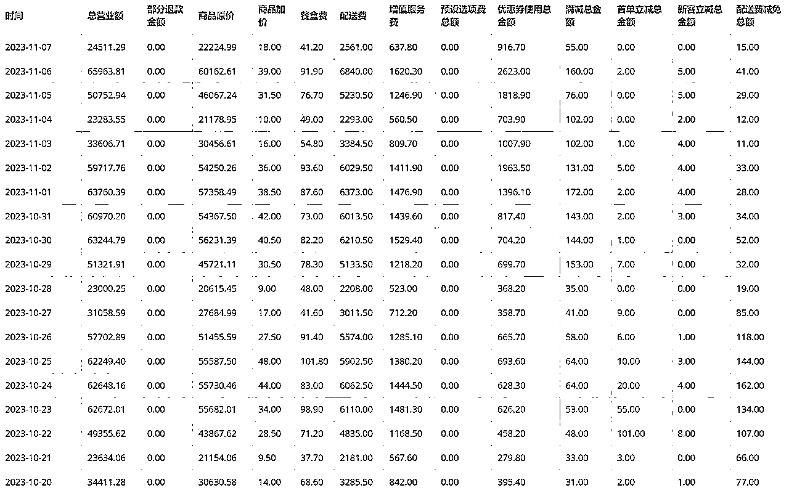
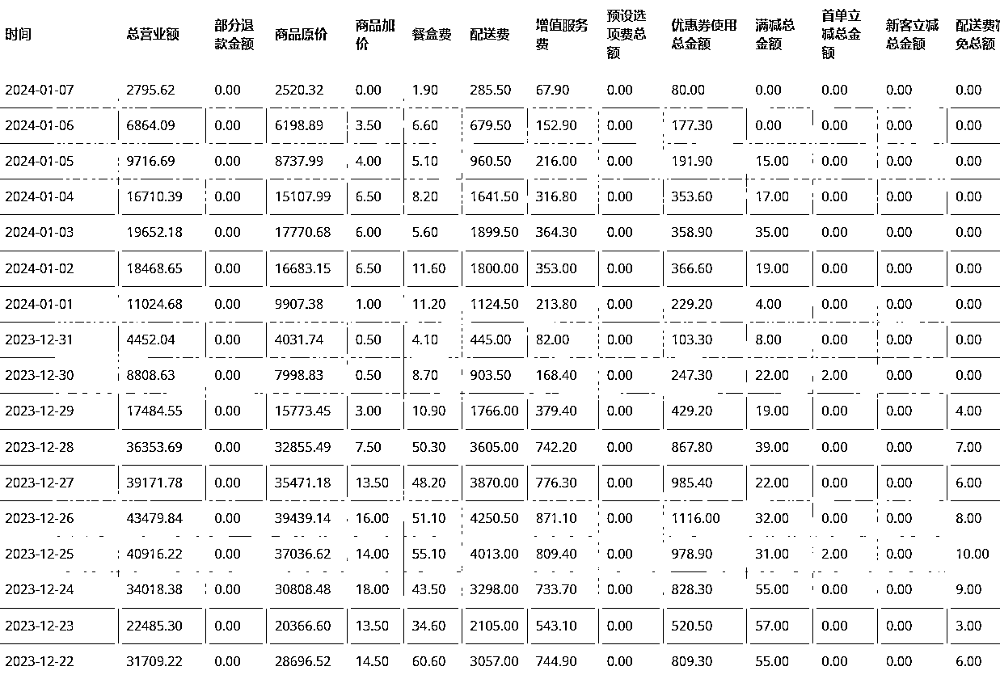
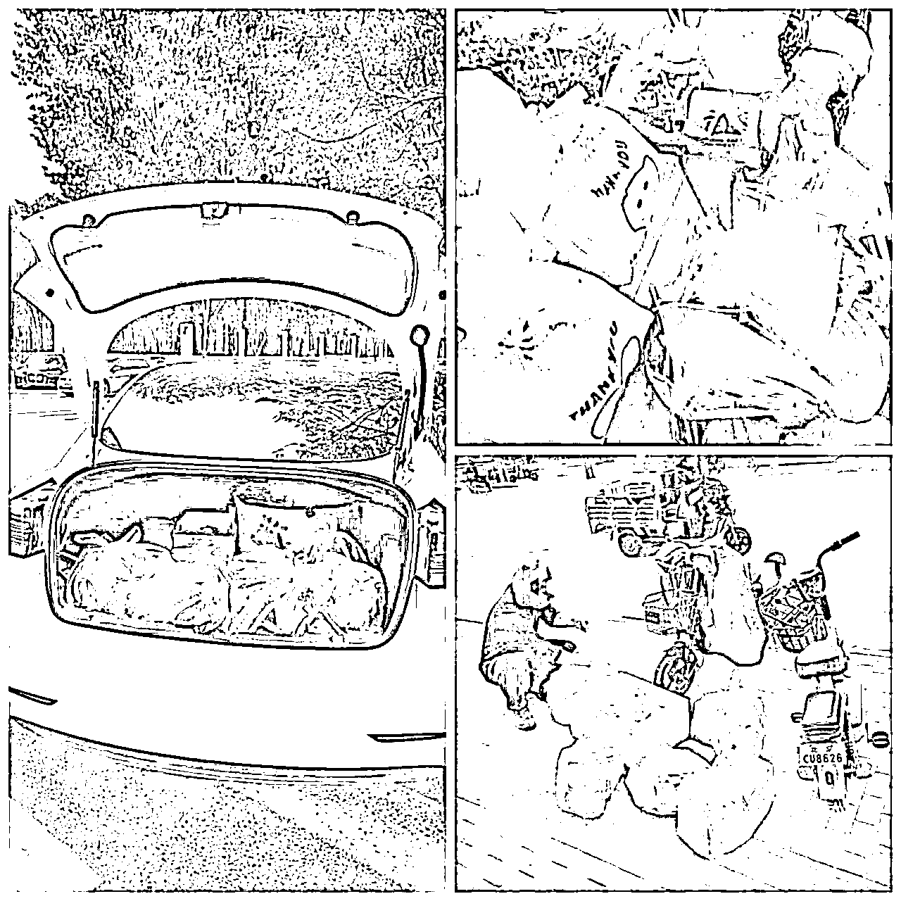
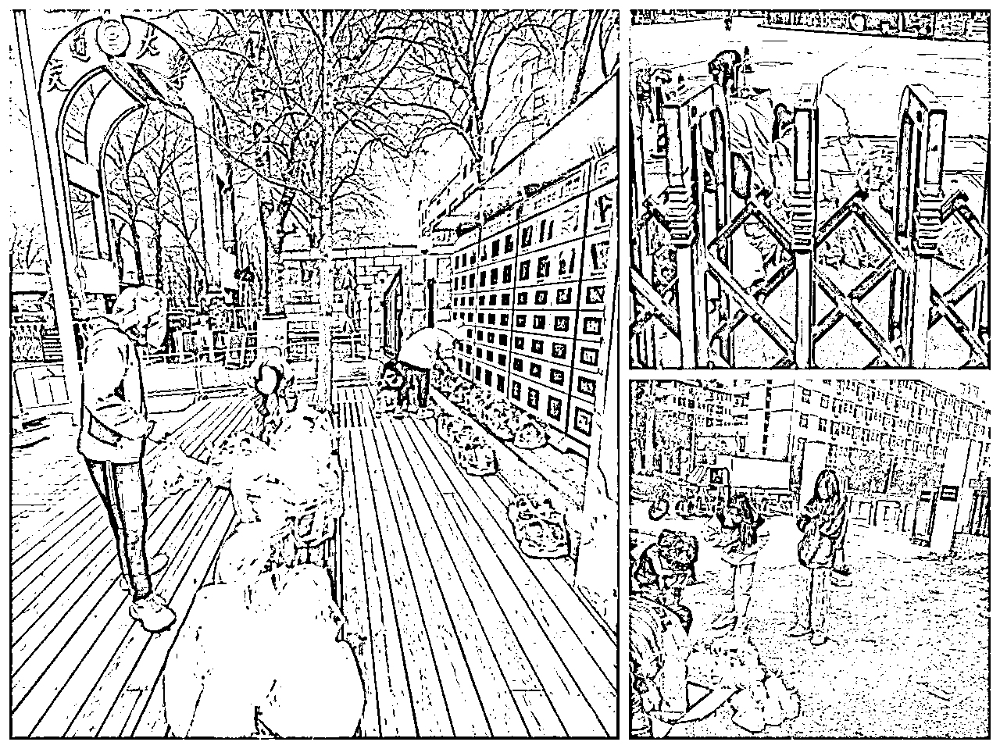
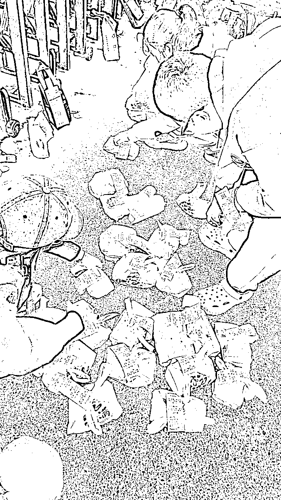
| 部门总览 | 部门职责 | 薪资架构 |
|---|---|---|
| 市场部门 | 负责面对面谈判商家，要商家的资料、反馈小程序问题 | 项目分成 |
| 后台运营部门 | 负责第三方小程序的链接和问题反馈、商品上架和菜单调整、后台资料修改等 | 普通工资 |
| 校园面试管理部门 | 现场面试学生、筛选学生、扫楼监管、管理学生经理、后期学生送餐问题反馈 | 项目分成 |
1.团队在工作过程中用钉钉定位打开，早上到现场钉钉群内报备。
2.早上工作完成后，回到酒店休息。下午一点进行下一步复盘
3.复盘过后前往下一个开拓的学校谈判商家，面试学生
4.下午把商家的菜单和身份银行卡信息要来进行上架
5.晚上回去和老板再次沟通确定明早到店教学
6.这是一天的工作流程，可以仿照
1.如何获取学生资源？
2.如何和校内学生进行有效沟通？
3.如何去谈判校外的商家并要到银行卡和身份证正反面？
4.如何在后期稳定地运营校园团队？
5.如何给学生和团队分成？
.......这当中还有无数的困难和问题，让我一一为大家解答！
项目流程（时间顺序）
https://www.lewaimai.com/（乐外卖）
https://www.keloop.com/aboutus.html（快跑者）
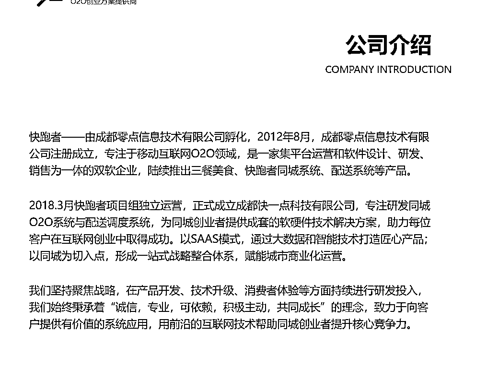
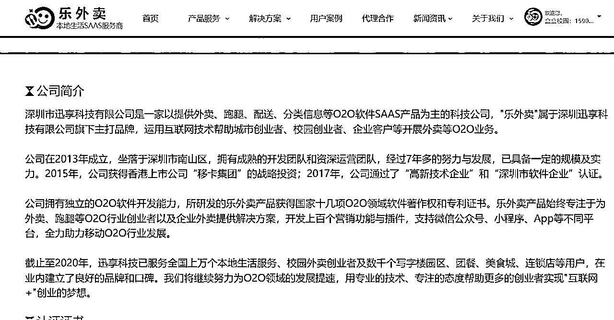
自己创建的群、跑腿群、二手群、脱单群、兼职群、创业群、宿舍群、互助群、午晚餐到寝群都可以发
如果我们在学校有资源有各种群聊，那么可以直接把早餐客户群直接发到我们自己的群当中（可以在群内发红包和通知，我们的早餐到寝室服务已经搭建完成，请大家进群，每天有福利相送）用这样的方法来吸引学生进群。有校园墙可以直接发墙，方便快捷
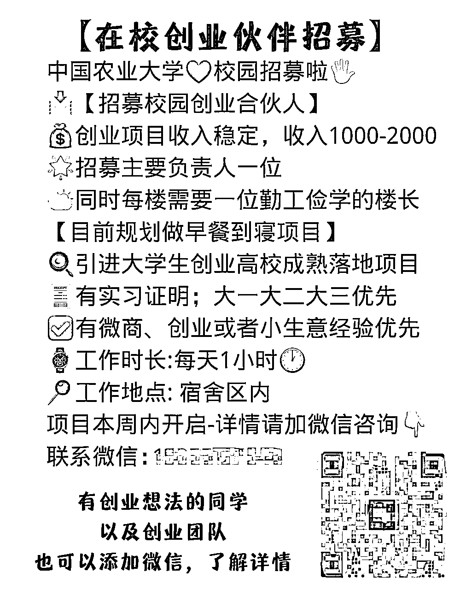
通过二维码加上面试部员工之后，员工打电话简单说一下项目流程和工资给学生约面试，一般是第二天下午3~6点或者晚上下课，确定好之后发在学生对接群，一定要当面面试
到了约定的学校门口之后和学生讲我们项目和工资
项目流程：“这个项目就是早上6.30商家将餐品送到学校离宿舍最近的宿舍门口，再由现场的学生点餐，点完餐数量之后进行分餐，最后由学生去送餐。送到寝室门口的挂钩之上，这就算是一单完成。学生的薪资按照周或者月结，这样会比较方便去进行管理送餐的同学解决完成之后，配送问题解决了"
主要是看看学生的逻辑能力、语言能力、校内资源等
学生不要什么都会的，资源特别多的，油嘴滑舌的、过来白嫖项目打法的，这一类一概拒绝
讲清楚项目之后和学生推荐，可以从身边招聘楼长、可以去各种群招聘楼长自己创建的群、跑腿群、二手群、脱单群、兼职群、创业群、宿舍群、互助群、午晚餐到寝群都可以去尝试招聘楼长，当天晚上或者第二天中午给招聘结果即可
最终面试结果由招聘楼长的数量、面试过程当中的语言逻辑、校园履历的丰富程度来筛选
最重要的指标就是楼长数量！
招到楼长之后，和经理沟通，让经理带着楼长或者楼长自己去学校里面进行扫楼，一个一个寝室去敲门，让学生们进群,在扫楼时候可以这样和学生说：”Hello，您们好呀，我们是大学生自主创业做项目，这个是早餐到寝室，晚上你们点单，早上我们把早餐送到我们的宿舍门口，每一个早餐都有我们的保温袋，保证送过来都是温暖的，后期在我们寝室门口我们也会挂挂钩的。所以放心买就行啦”
就这样挨个寝室去扫，学生不愿意可以多多安慰鼓励，她们有能力，想赚钱的是扫的特别快的，所以基本上是没有特别大的问题的。
对于不会扫楼的学生一定要多多安慰，对于比较跳，想要在扫楼上赚钱的楼长可以这么说：“你好，我们这个项目是完全可以做起来的，扫楼对于你们来说也是特别不错的，咱们一下把楼栋人数增加到百人，那么之后也是不要你再去了，比较简单馁各位学生”
一定要安慰好学生，做好学生思想工作，扫楼是最艰难的，但是一但把楼栋搭建好了，这个项目就百分之99能成了
如果学生不愿意扫楼直接换楼长，有楼长愿意赚钱，扫楼尽量别给费用，有些团队给了钱也扫不起来
早餐群至少要保证有800人以上，经过我们团队的计算和经验来看，各类大学的男学生下单转化率在20%这样，女学生在37%这样。因为女生比较懒，早上也要化妆，就不愿意去起很早去买早饭。男生无所谓，洗漱很快不用打扮直接去食堂都没关系。送餐的楼长和客户群体一定以女生为主，这样能达到一个单量和利润的最大化。
我们的群在人拉到800-900人后，把小程序发到我们的群当中，最好是当天拉好群，下午谈商家晚上可以直接让下单，这样的效率是最高的
和学生聊的时候也要聊到工资，这是学生最基本的工资架构
| 学生等级 | 工资 | 结算方式 | 职责 |
|---|---|---|---|
| 校园经理 | 每单0.3元~0.8元（总单量） | 月结/周结 | 管理楼群、维系学生关系、每日漏餐报备 |
| 校园楼长 | 每单1元~2元（送餐单量） | 月结/周结 | 送餐、扫楼、群内宣传 |
1.从美团选择一些品牌商家价格不要太高
2.在学校周边转看看有没有合适的商家
3.通过高德地图找商家
4.早上去找成功率高
5.商家店内早餐种类多样优先选择
6.商家一定要对我们项目充分认可
商家端是项目的重中之重，商家端不会谈判，那么我们整个项目也做不了。很多学生团队就是死在商家端
流程是这样：”老板您好，请问咱们家做团餐吗？我简单介绍一下我们这边是学校内部的同学，现在做创业项目，是一个早餐到寝的平台，我们的客户群有1800多人（最好数字高一些，有些老板接团餐只接单量大的）一天点餐的人数有大概400人左右点单，我们六到七个商家一起来做我们学校”
一般这个时候老板就比较心动了，很多老板就是赚钱的，就是想要利润和单量，单少是不做的，一定要掌控好商家心理，这样很快就能谈下来。
商家如果意愿很大，那就和他说：“老板，您看咱们学校单量比较多，所以能不能给我们便宜一点，我们也要给学校里面送餐的学生发一笔工资，也请你理解一下，大概给我们八折这样子，”其实很多商家都是想合作的，一定要给他们一种单量大有自信的感觉。八折特别重要，因为我们要从中抽点，这是我们要赚的钱！
“老板我们这边早上可以帮咱们送一下吗？送到学校门口就行，因为早上学生也不方便出来嘛，所以这一块能不能帮我们早上去送一下”一般老板这个时候就会答应
最后说：“我们是公司，我们是对公打款，都是第二天打到我们家银行卡账户上面的，所以能不能把咱们家银行卡和身份证正反面出示一下，我来给咱们家店里面绑定”
把菜单、银行卡、身份证拍一下，发到团队上架群，搞定！
之后和老板交代明天早上差不多五点左右到店教学，让老板稍微早一点到店里面
答应后看一下店里面价格，一般包子价格控制在1～2.5元以内，肉包，菜包，粉丝包，包子店铺最好合作巴比或者早阳。
不要随意加价，价格一定要和店里面一样，贵了学生不买我们也没单，只有有单学生才有钱赚，学生有钱赚才会和我们长期合作！很多学生做早餐到寝就是太贪心，价格巨高，没人买两天就死透。
酱香饼商家的价格设置大份和小份，一般小份是3～4元，大份5～8元这个自己去调整
粥的价格切勿参考美团，因为美团全部都是加价卖的，参考我给的价格
学生看到的价格，皮蛋瘦肉粥8.8，小米粥，南瓜粥，绿豆粥，黑豆粥，青菜粥6元左右，荤粥价格设置在十元左右，价格别设置太高，不然学生不点（可以的活就去谈品牌粥例如，三米粥铺，曼琳粥，江小白，江川右之类的粥铺）
肠粉类价格在10元左右即可，基础的青菜鸡蛋肠粉价格在8.8这样子
馄饨价格和店里差不多即可，一般吃馄饨的同学不多，这个产品为候选项
小笼包之类的也和店里面一样，别超过十块钱
肉夹馍之类的产品因为本身价格比较高在8元左右，所以有的话最好，没有别强求，单量不多
杂粮煎饼原价6～7元，可作为备选项
（菜单图片，参照即可）
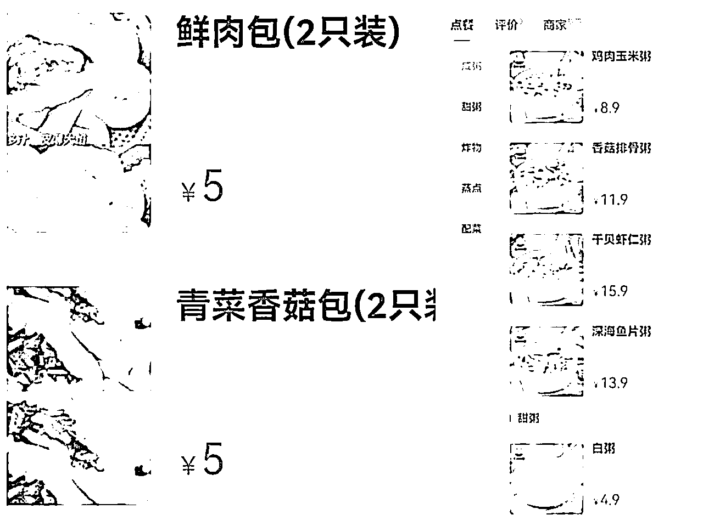
1.凌晨进店帮助商家链接打印机（打印机一般是飞蛾打印机、商鹏打印机等等，商家有最好，没有的话可以送一台给商家）
2.教会商家看商家端后台，看备货单，打印小票，看后台收入情况
3.教会商家用保温袋打包.
4.带商家早上去一趟学校门口认路，之后每天早上送完餐报备以免出现学生团队不知道餐送达的情况
5.菜品价格（不要给老板权限调），要调整和对接人讲，不然容易乱！可以给商家自己开上架商品权限，有经验的老板可以自己上架
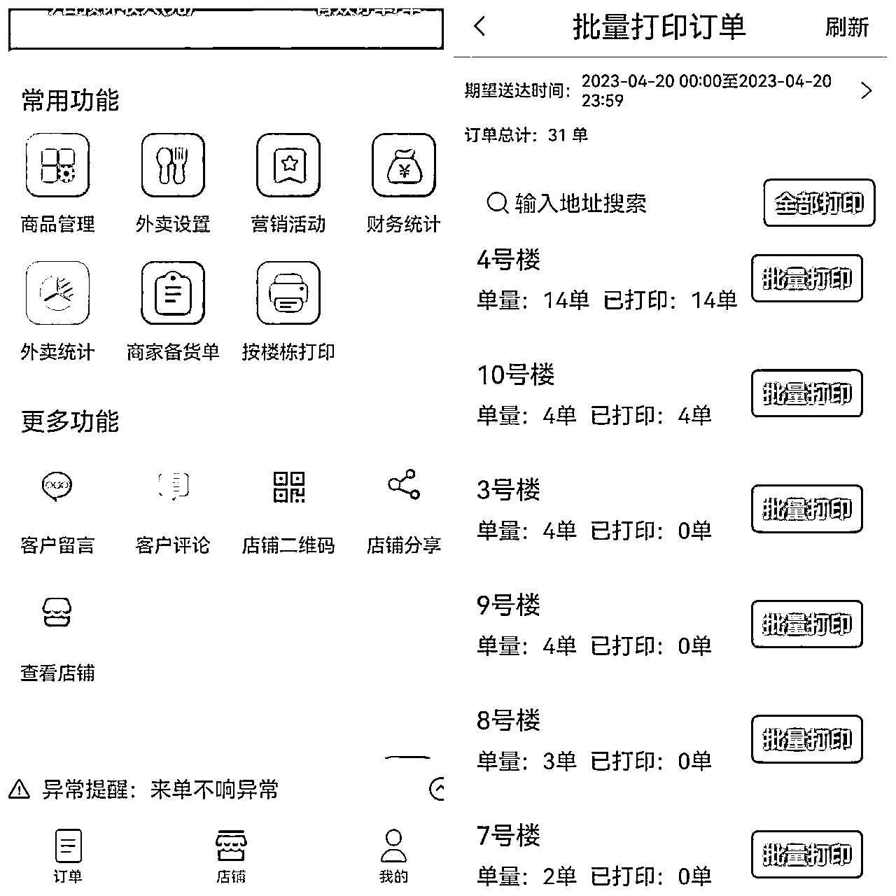
1.把商家、学生经理、校园端员工、商家端员工。拉到一个群里面方便早餐对接
2.商家早餐送到后发到群里，学生有客诉问题及时反馈也要给商家知晓
1.如果商家出现了少餐漏餐的情况，学生反馈给校园经理，校园经理先垫付，一个星期算一次让商家把漏餐的钱冲到后台扣下来给学生
2.用表格记录每天少餐漏餐情况，发工资时一起补上
3.关注学生需求，学生需要新商家，在单量增多的情况下可以补充
4.学生客诉立马解决不能拖
校内无学生资源的学校一般需要找校园墙和学校渠道，其他的流程都一样
通过小红书、抖音等寻找即将要开辟的学校的校园墙以及校内资源，找到以后沟通。
说自己是学校内部的想发一广告，广告大概内容是，寻找校园创业者，早餐到寝的校园负责人和送餐人员......就是这样一个流程，比较简单。关于广告价格控制在300以内，记得要找靠谱有效果的资源
校园墙的筛选逻辑（有人数、有不冲突的校内业务、能够持续运营且有活人评论留言）
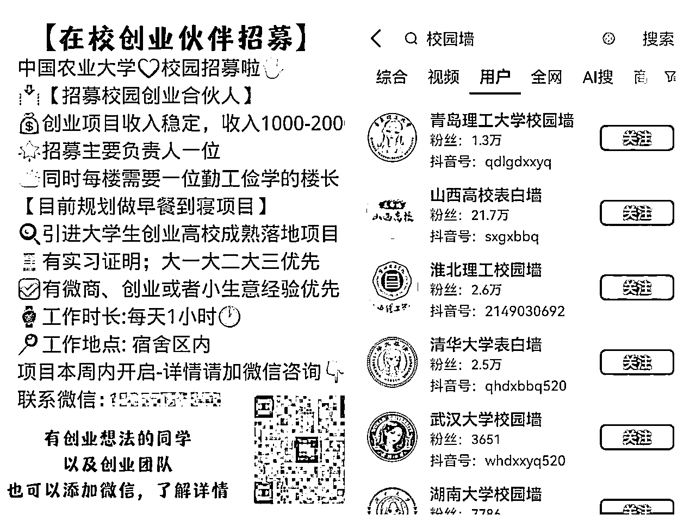
1.现场的楼长要选择一个负责人，负责分餐核对
2.楼长一定要管理好，送餐必须准时送达，楼长老迟到直接换！这是底线，服务要做好
3.给商家设立规章制度！不准迟到！迟到罚款！
4.所有的餐品必须用保温袋，PDD 0.25元一个，强制加学生0.3元保温袋的钱（这个都是商家出商家收），这个一定必须一定必须要有！为什么很多团队做不起来！就是弄得不干净，不注重保温！也没售后，服务一塌糊涂！保温袋从送餐第一天就要有！
5.所有的起送价都是4元（商家可以更改但是不要超过6元），配送费1元给到楼长，校园经理给的是总单量的提成，一单0.3-0.6元
6.一个学校刚开始的时候要把控好单量30~50单即可，避免出现早餐商家爆单的情况（老板一开始不熟悉业务流程，所以很容易出现迟到的情况，这时候就要去商家店里面帮助商家出餐，教她们怎么看APP）
7.在去商家店里面的早上记得要帮助商家绑定打印机，（打印机是飞蛾打印机，在京东上299一个，可以先提供给商家，凌晨教商家如何看APP如何打印，一定一次就教会，不然要天天早上去，很麻烦！）
8.熟练了具体流程之后可以给学生做一些活动，比如，满5减2，减免配送费等活动，只有这样才能让学生持续下单（活动3-7天即可，做久亏本）
9.学会和商家谈判，让商家多让利，特别是那种很土的早餐店，本身就不贵，八折之外价格还能压低
10. 2.5的肉包，如果店里面1.5元，就和老板说八折，老板意向高的如果合作，我们就能赚一个更多的差价，我们可以卖2元（老板看不到学生端，所以不知道我们给学生卖多少钱，那么多中间这个2-1.5*0.8这个钱我们都可以赚到，但是必须要业务熟练了之后才能这样做）
11.学会给学生分润，如果学生团队做的很好，单量很多，一定要记得过节过年发个大红红包，让学生觉得咱们可以做这件事情，只有这样才能做长久，学生做的好，那么他的学弟学妹也会做这个项目
12.一个学校已经做起来以后一定要经常看后台数据，看到有单量减少的情况一定要警惕，单量少了说明、不是学生配送有问题就是商家端口味或者配送有问题，找到问题立马解决
13.大学生的契约精神是很弱的，不开心她们就不会做，可以多给一些校园的赚钱资源或者多多沟通。让她们相信这个项目是有利可图的。如果真的不做了，最好叫她们介绍其他的能做的小伙伴来担任楼长或者经理。
14.人员的更换是不可避免的，换就换，学校有能力的人非常多
1.这个项目前期搭建是特别累的，一件反人性的项目，用了人的惰性去做，所以要找到靠谱的合伙人并一起分润
2.有无校园资源的基本操作逻辑差不多，根据校内实际情况去实操即可
3.不肯帮助商家去赚钱，自己绝对赚不到钱
4.搭建期间很累，但是一但正式运营起来了，后期是不用怎么去盯着，比较省心
5.项目不建议做特别大，因为频繁出差成本太高，建议用团队力量集中打一个城市大学城即可
再次声明一下，本文仅供生财圈友学习参考，切勿拿到市面上割韭菜！！侵权必究！
各位互联网前辈好！我是木陈林!23年2月~11月我们团队在全国高校打造了一个日均1W单的早餐到寝平台。在这个过程当中我们去过武汉大学城，当时在江汉大学有一个团队做午晚餐做的特别棒，基本能把江汉大学的午晚餐市场全部垄断，甚至比美团和饿了么做的还要好。
那么他们为什么可以做到一天600单到1000单，他们团队是怎么运营的？又是如何在疫情当中夹缝生存的？
我和江汉大学的负责人沟通过后整理出来了一片全网比较详细的午晚餐到寝平台的打法分享给大家，有资金有能力的伙伴可以直接拿去实操！
再次声明一下！切勿拿我的文章割韭菜！做培训！
午晚餐项目的赢利点是商家抽点15%~20%
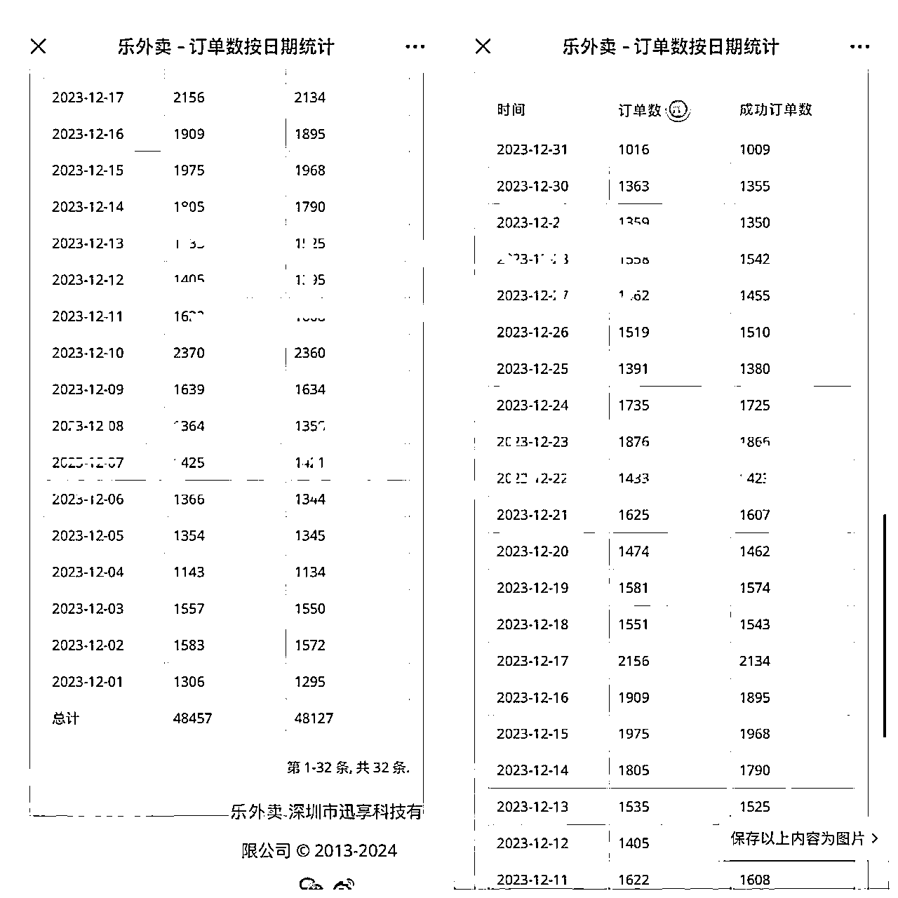
那个时候是21~23年，各地疫情起起伏伏，动不动有地方大规模爆发疫情。武汉很多大学生不能自由出入只能在学校吃，江汉大学那个时候的管理没有特别严，所以校外的外卖都可以送到学校里面，只要用校园卡即可进入学校
看到了这个契机就想到了学校内部这个外卖市场，从学校外面谈判商家，学生下单，再由校外的骑手或者校内的楼长送到寝室。看到有这样一个商机直接开干。
| 部门总览 | 部门职责 | 薪资架构 |
|---|---|---|
| 学生市场端 | 谈判校外商家、要商家资料、反馈商家问题等等 | 项目分成 |
| 技术后台 | 小程序问题反馈、菜品上架、菜单调整、后台资料修改等等 | 项目分成 |
| 宣传送餐端 | 送餐、扫楼宣传 | 一单一元 |
1.如何和商家沟通抽点费用以及后期活动问题?
2.怎么样更有效地链接学生团队?
3.如何进行每日的有效管理?
4.几个合伙人如何分钱？
5.微信小程序的搭建当中很多证件没有怎么办？
在下面的文章当中我来一一解答.......
项目流程（时间顺序）
午晚餐到寝这个项目尽量在学校原本就有学生群体资源，因为午晚餐不像早餐，早餐比较轻，毛利低，管理难度比较小，就早上时间段。午晚餐时间段跨度比较大，如果没本校的同学和管理层管理很容易出现少餐漏餐的问题。午晚餐需要的楼群和送餐人员也很多，所以在学校需要有些校园资源。
市面上比较好用的稳定的，能帮助团队解决小程序资质上有困难的第三方不多。首推快跑者、乐外卖、逐趣、零点。证件，收款帐号，系统都可以搞定
小程序还是根据体量来谈，一般来说是5k一个学期或者一年。
小程序的设计根据市面上做的比较好的午晚餐到寝校园平台去做设计—“Hi这位同学、谢谢有你”这两个平台还不错，可以对标。
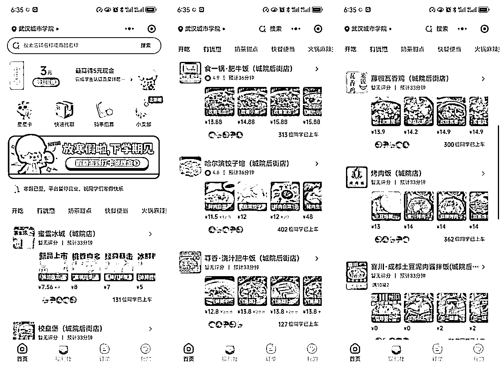
在自己的楼群、跑腿群、二手群、脱单群、兼职群、创业群、宿舍群、互助群、早餐到寝群等楼群发布招聘信息招聘送餐楼长。
送餐的人员也可以在美团众包等外卖第三方骑手平台上面找，首推外卖员送餐，送的快，事情少，效率高
楼长加上微信之后和楼长简单聊聊项目和送餐价格（一单一元）送餐时间在中午和晚上，中午11～1，晚上5～7（时间可以根据具体情况进行调整）
楼长确定下来之后由校园负责人带着楼长去扫楼宣传，午晚餐最好带点物料，比如有小程序二维码的小卡片，小徽章等等。和学生这样说：‘HELLO，您好我们是本校同学做了一个创业项目，午晚餐可以把外面的商家送到寝室里面来，到时候你们可以在床上躺着吃饭啦！’
很多学生其实对于午晚餐到寝是没办法抗拒的，因为冬天冷的时候大家都不想出去，和他们聊聊这个蓝图就很美好。学生也愿意进群去点餐
就这样一个一个寝室去扫，一定一定要带着楼长去扫，这样这些学生才有动力，对于不会，不敢的学生一定要多鼓励多安慰，这样才能激发他们的热情和赚钱乐趣，一个学期就这一次，扫好了下次就不用弄了，我们专心送餐就行。
对于送餐的同学要把他们当做合伙人看待，除了送餐的钱之外也要给一些赚钱项目和开拓思维认知的资料给他们。要知道送午晚餐的学生一定一定是很缺钱的，不仅仅发工资，还要给予更多能力提升的帮助，不然楼长的流失率是特别高的。要注意！
关于送餐车辆的问题，一般尽量要求有电瓶车，实在没有的话可以帮学生租，200～300一辆，价格也还可以。
1.人数最少要达到千人以上
2.群内必须每天发布小程序和点餐文案（同学们，每日午晚餐推荐来啦！今日推荐沪上阿姨加大鸡排......给学生一个点餐的方向）
3.偶尔发红包做做社群的福利活动
4.建好午晚餐楼群的当天或者第二天找好几家外面的商家可以先试着送起来，尽量不要等，不然学生会以为是骗子。
1.校内午晚餐商家不推荐谈判，因为这个当中涉及到学校的外包食堂、食堂领导、学校政策、学校领导的决策，这个当中问题点比较多，利益点也很多，所以不推荐
2.校外商家是可行的方案，利益点少，对于寝室阿姨给点红包打点一下即可
3.寻找商家，从美团、饿了么、校外走访的形式寻找合适商家
4.谈判商家特别重要！在这一方面一定要你在上，商家在下，我们给商家带来客源，带来更多的营业收入的提升，商家就应该叫我们爹！所以！和商家谈合作的时候不要怂，扣点的问题一定要一碗水端平讲清楚讲明白
情景模拟：“您好老板，你这边主要是做面条的是吧？我们这边是学校内部的同学在做创业项目，是一个午晚餐到寝的平台，人数大概有几千人，而且也在扩大楼群之中，想问问老板有没有这样一个意向和我们合作。”
一般这个时候老板就会问是怎么样去合作，和老板说：“老板，我们学校人比较多，单量比较多，所以能不能给我们便宜一些，给我们一个八折加1元跑路费（这个抽成看自己能力，7折也可以，15%加1元跑路费也可以，商家一单只要不亏本都会去做，学校门口的商家都是指望在这一段时间内去赚钱，合作意向一般来说都比较高）”
老板答应合作和老板说:"现在国家对于小程序管控比较严，所以现在钱都是第二天打到老板您这一块的银行卡里面，您看看这边能不能提供一下身份证的正反面和银行卡帐号，以及食品安全许可证，营业执照"
这时候有意向的老板会直接和你合作
没有意向的老板直接pass，有的是商家
老板只管出餐，尽量多谈一元跑腿费给送餐学生
如何后期和老板谈活动？
打电话沟通：“老板您好我是.....我们这边最近要做一个满五减三的活动，因为最近单量减少了，所以我们这一块要帮助你们提升单量，我们也会边做活动，边帮你们去扫楼扩大楼群，做几天之后我们单量会有一个很大的提升，你这边出两元，我们这边出1元”
这时候老板会问你:"我做了这个活动没有用咋办啊？（做完到底能不能提升单量啊我不做）"这一类问题通通都给老板画饼：“老板，我们都做一段时间了，你要看我们这个体量啊，对不对！我们学校这么多人，做个活动加个千把人轻轻松松的，分到你店里一天多个十几单二十单这都是小问题老板，所以您这一块别担心太多，教给我们就OK！”
做生意一定要给老板信心和希望，这样老板才会和你长久合作。在这个活动谈判当中，也是一种筛选，筛选出来愿意和团队合作的商家，这类商家想赚钱，想扩大影响力和规模，这类商家可以多帮助其做商家套餐活动，多宣传，帮其赚钱，做的好，去商家那边吃饭都不要钱。
菜单的价格尽量便宜，对标学校食堂的价格，千万别加价卖！！！
学生群体对于价格特别特别敏感！！！
在这里给一些模板仅供参考
盖浇饭11元左右、鸡排饭9.9左右、米线类9～15元、面条8～15元、套餐饭8～20元、牛肉饭14～20元、粥类4～20元区间.......
冬季所有的饭盒外面必须加保温袋！！！如果商家有就可以用自己的，没有的话必须要，不然冷透的饭是没人点单的（加几毛钱保温费都可，看学生能不能适应，这个钱自己收也可）
把商家，学生负责人，楼长拉到群里(学生端会有很多商家群，把群折叠即可，出现少餐漏餐，在群里宝贝告知)
不要拉大群！！！不要把所有商家拉到一起，商家很容易吵架，遇到问题会在群里扯皮，后期也不利于做活动和管理！！
当天上架完后台端就绑定账号，市场端帮助商家绑定打印机，下午教会商家使用，等到第二天送餐当天中午去商家店里帮忙，看一下商家后台端有没有出现什么问题
这样一个完整的商家流程就结束了。
1.午晚餐正式运营起来了以后每天一定要发送送餐小程序
2.商家和学生出现问题一定
3.创始人如何分钱？
这个项目是拿的抽成的钱，在分钱这一块出钱多的人理应多分，做事情多的可以多给一些，其他的送餐同学照约定给就行